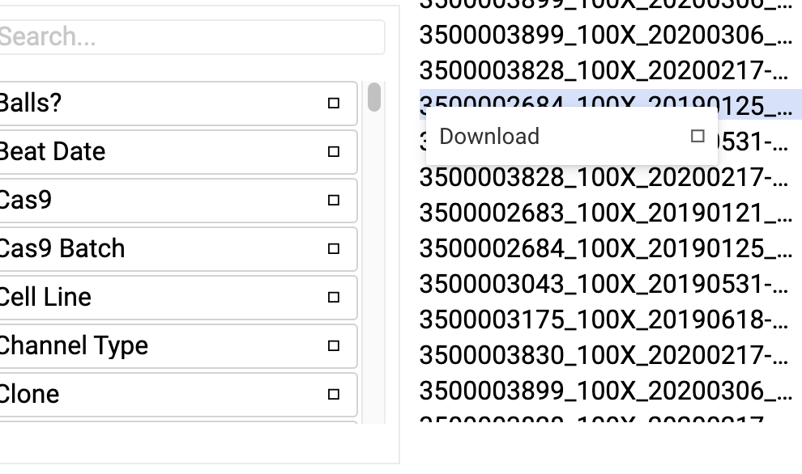
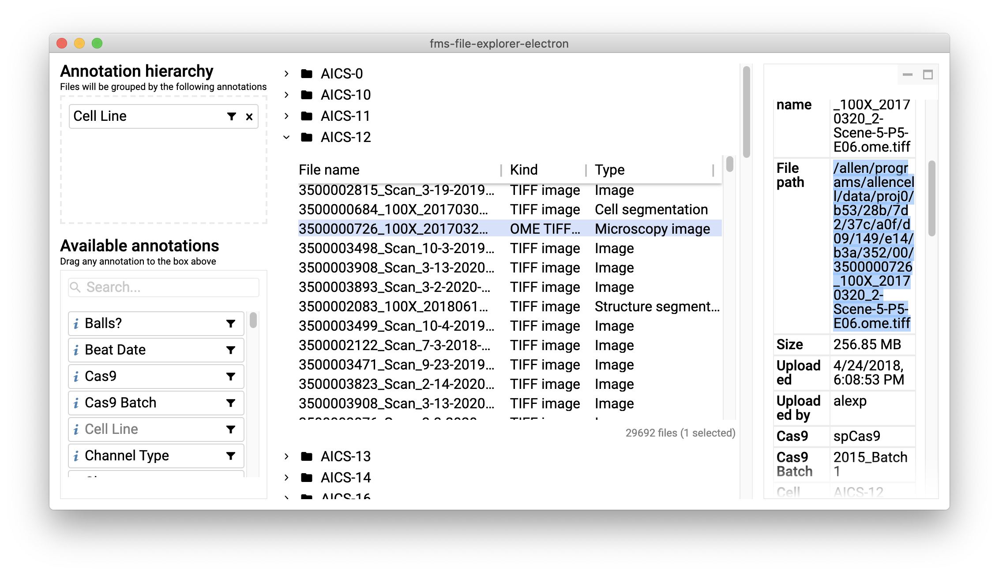
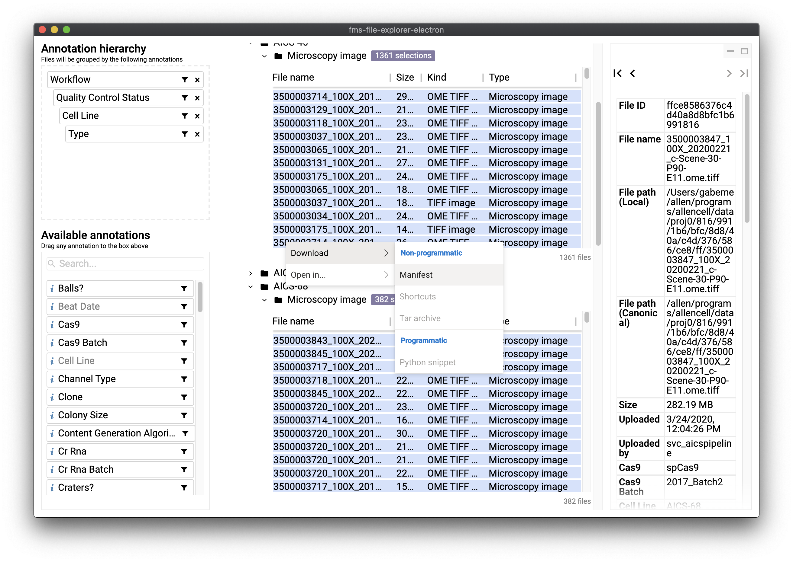

To use outside of the office, connect to the Allen Institute VPN. To be clear: you do not need
to be on VPN to download the application, just to use it.
N.b.: This application requires access to the public internet to work properly. If your VPN configuration blocks access to the public
internet, you'll notice--among other potential issues--that usages of certain icons are replaced by placeholder boxes. Those boxes are
still functional, but without seeing the icon, it may be difficult to know what function the boxes serve!

If your VPN connection blocks the public internet, you may notice something like the boxes pictured above
(e.g., on the right-hand side of each annotation).
How to work with data you find in the FMS File Explorer
We would love to hear from you about how we can better integrate this application into your workflow.
Please reach out!
So you've found some data that interests you. Now what?
There are currently at least two ways:
Open a file using an image viewer: If you are connected to the Allen Institute network (either directly or via Remote PC)
and you have the Isilon mounted on your computer at /allen, you can copy any file path directly from the FMS File Explorer
and paste it into your image viewer of choice (Zen, FIJI, AGAVE, etc). To find the file path for a file, simply select it: the file path will be
displayed in the details pane on the right-hand side of the application.

The file path of the selected file can be copied directly out of the file details pane on the right-hand side.
Work with files in batch: If inclined to work with files in batch (perhaps via scripting), right-click on a selection
of files or on a directory within the FMS File Explorer and select Download -> Manifest. This will trigger a download of a CSV file
containing a row for each file that matched your selection. The columns within the CSV represent all available metadata--expect few rows, if any,
to have a value for each and every column. Once downloaded, each row will have a File Path column that points to its permanent location
on the Isilon.

You can download a CSV of all of your selections by right-clicking on your selection.
How do I sort? (And other such questions)
If you're looking around the application trying to figure out how to do something and you just can't figure it out, there's a
chance that we haven't had the opportunity to implement that feature yet. (Sorting is one example.)
To know for certain whether what you're hoping to do isn't possible yet or whether it just isn't obvious,
you can ask your team's ambassador, or reach out directly a member of the software engineering team.
If there is a particular feature that would really make this application sing for you, please let us know!